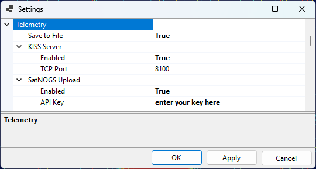

Setting Up Telemetry Decoding
These settings control the optional outputs of the built-in telemetry decoder used by the Telemetry panel — saving decoded frames to a file, sharing them over a KISS server, and uploading them to the SatNOGS database.
Decoder Settings

The outputs are configured on the Telemetry page of the Settings window (Tools / Settings):
Save to File — when enabled, every decoded frame is appended to a daily log file in the
TelemetryDecodessubfolder of the data folder. The file contains the same information that is shown in the panel: the time, satellite, transmitter, frame length and address, the decoded telemetry, and the ASCII, HEX and META views of the frame.KISS Server — makes the decoded frames available to other telemetry software over a KISS-over-TCP server:
- Enabled — turns the server on;
- TCP Port — the TCP port to listen on (8100 by default).
Point any program that reads KISS frames over TCP — for example a satellite telemetry decoder or a custom logging script — at
localhostand this port to receive the frames as SkyRoof decodes them.SatNOGS Upload — forwards each decoded frame to the SatNOGS DB, contributing your telemetry to the community database:
- Enabled — turns uploading on;
- API Key — your personal SatNOGS DB API key (see below).
Signals the Database Does Not Describe
The Telemetry panel normally reads a transmitter's modulation, baud rate and framing from the satellite database. Three cases are not covered there, and all three are handled the same way — by entering the parameters yourself in the Signal Details dialog (the gear button in the panel header), or by pressing Discover and letting the search work them out from the signal:
an unsupported transmitter — the panel says telemetry format not supported, CW decoding not supported or FM decoding not supported. Its database description either is wrong or names something SkyRoof cannot decode as it stands; overriding the modulation and framing is what makes it decodable.
a transmitter with no parameters at all — the dialog opens on an empty form, every field blank. Fill in what you know, or press Discover and let the search fill it in.
a terrestrial signal — tune the radio to a terrestrial frequency (see Frequency Control) and the panel decodes whatever is on it, once you have given it the parameters. Nothing about a terrestrial signal is in any database, so this is the only way in.
SSTV is one of the choices in the Modulation field. Selecting it starts the SSTV decoder on the tuned frequency, terrestrial or not, and needs no baud rate, framing or deviation — the mode is read from the image's own VIS header. See Receive SSTV Images.
Terrestrial Parameters
Terrestrial decoding differs from satellite decoding in a few ways, all of which follow from there being no transmitter record behind the signal:
the parameters last as long as terrestrial mode does. Moving the dial keeps them — you are decoding whatever is at the tuned frequency — while leaving terrestrial mode for a satellite discards them;
moving the dial starts a new pass entry in the tree, headed by the tuned frequency instead of by a satellite and transmitter name. The frame log records it the same way;
the frames appear in the tree, are written to the frame log and are served over the KISS server like any others, but they are never uploaded to SatNOGS — that database records frames against a satellite, and there is none here;
the parameters cannot be saved to
transmitters-override.json. That file is keyed by transmitter, so Save is unavailable while terrestrial; the parameters are a tool for the session, not a correction to the database.
Uploading to SatNOGS
The SatNOGS DB is a community database of satellite telemetry. To contribute the frames that SkyRoof decodes:
Create an account. Go to db.satnogs.org, click Login, and register (the SatNOGS network uses a single account across all of its sites). Confirm your e-mail address and log in.
Copy your API key. Open your account page (your callsign or name in the top-right corner) and go to Settings. Your API Key is shown there as a long string of letters and digits. Copy it.
Configure SkyRoof. In Tools / Settings:
- on the User page, fill in your Callsign and your Maidenhead Grid Square — both are required, because each uploaded frame is tagged with the observer's call and location;
- on the Telemetry page, expand SatNOGS Upload, set Enabled to true, and paste the API key into the API Key field.
Decode some frames. Open the Telemetry panel and decode a pass of a supported satellite. Each frame that passes its integrity (CRC) check is uploaded automatically; frames that fail the check are not sent.
Verify on the server. Confirm that your frames arrived, either way:
Web: open the satellite's page on db.satnogs.org (for example, by clicking on the SatNOGS link in the Satellite Details panel), click on Data and see if you are listed under Most Recent Observers.
API: query the telemetry endpoint for that satellite and look for your callsign in the
sourcefield of the most recent frames, for example:curl -H "Authorization: Token YOUR_API_KEY" "https://db.satnogs.org/api/telemetry/?satellite=NORAD_ID"Replace
YOUR_API_KEYwith your key andNORAD_IDwith the satellite's NORAD catalog number.